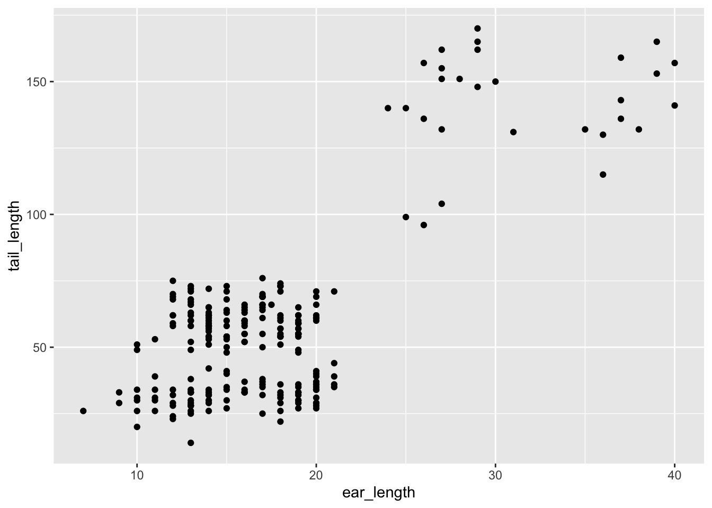
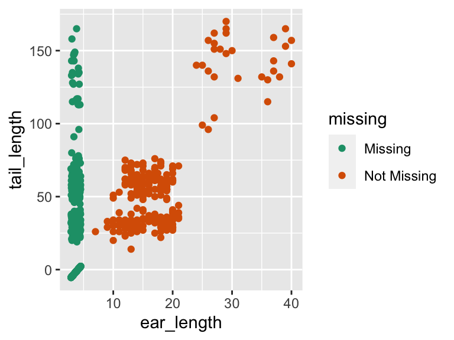
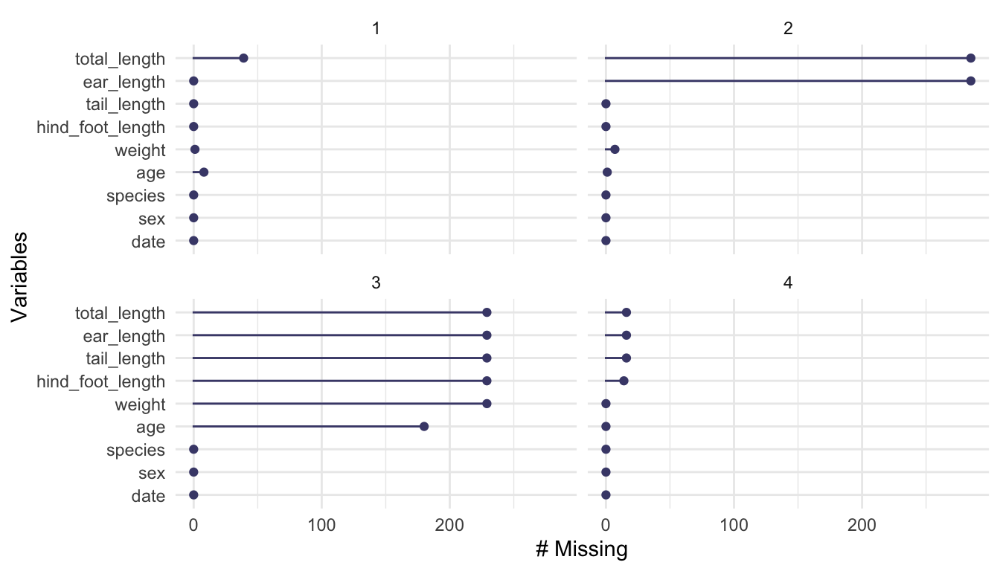
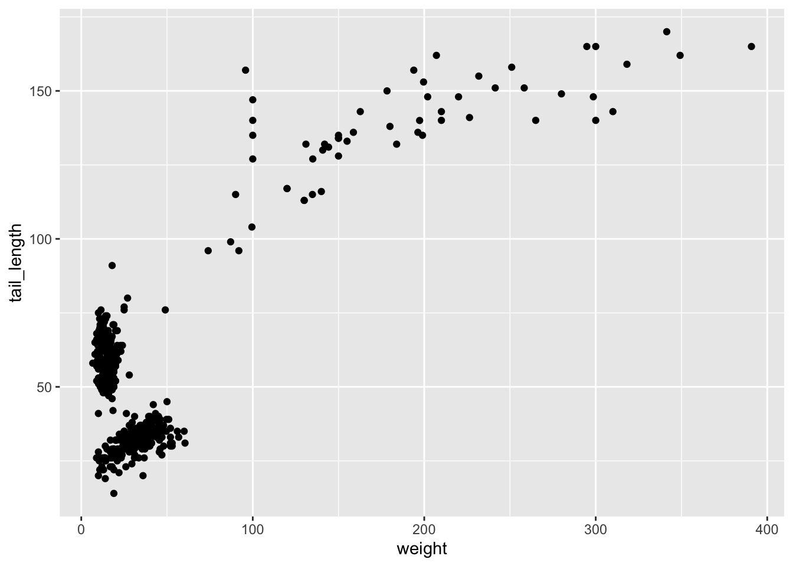
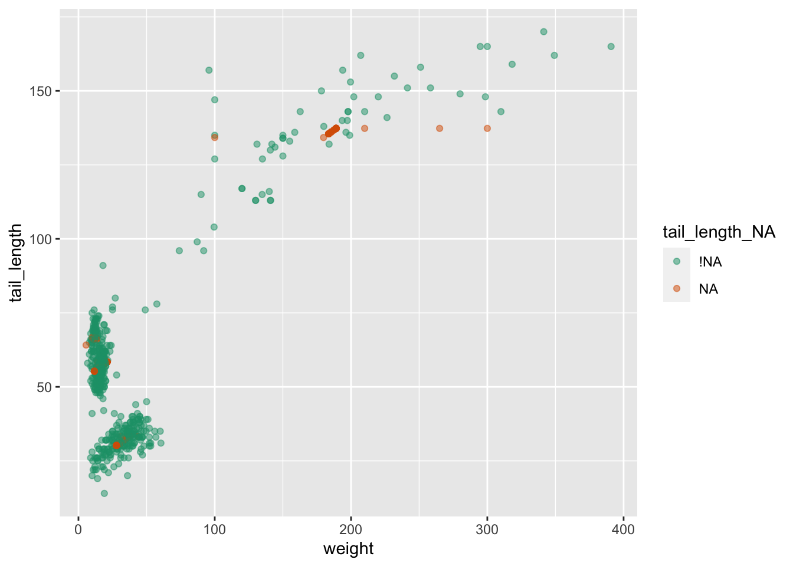
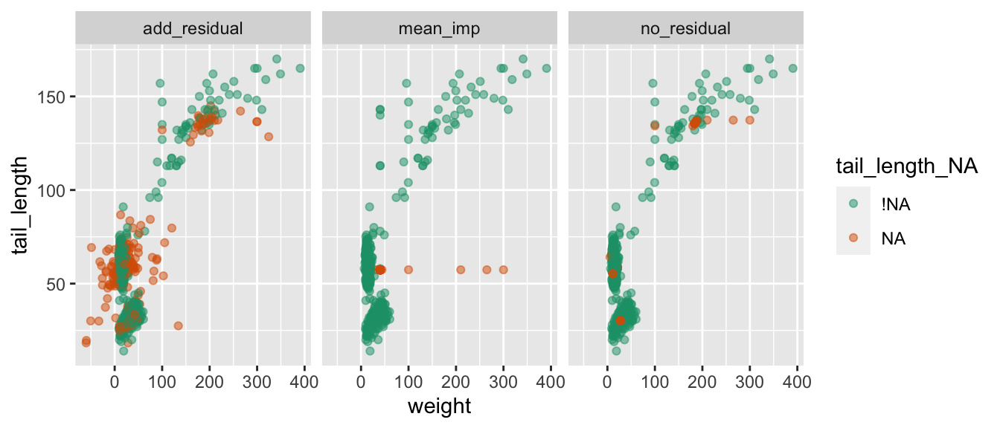

library(tidyverse)
library(visdat)
library(naniar)Some ideas for exploring missing data (Part 2)
Nicholas Tierney
Infectious Disease Ecology and Modelling group
Telethon Kids Institute, Perth, WA, Australia
NOTE: NOT YET REWORKED AFTER THE SPLIT, CURRENTLY COPY AND PASTE
Introduction
When you do data analysis, you come across missing data. Because I felt so frustrated by how hard it was to handle and wrangle missing data, I wanted to make it easier. In my endeavours I have written two R packages, visdat and naniar, for exploring missing data, and several papers on the topic.
The goal of this article is to share some condensed ideas on exploring missing data, using naniar, and visdat. To that end, we will focus on four questions.
- How do we start looking at missing data?
- How do we explore missingness in variables?
- How do we explore missingness relationships?
- How do we explore imputed values?
How to explore missingness relationships?
We can identify key missing variables using vis_miss(), gg_miss_var(), and gg_miss_upset(), but for further exploration, we need to explore the relationship amongst the variables in this data:
- date
- species
- total_length
- tail_length
- hind_foot_length
- ear_length
- weight
- sex
- age
Exploring using bivariate plots
Let’s say that we want to explore the relationship between tail length and ear length. Figure 1 shows a scatter plot of tail length and ear length.
library(ggplot2)
ggplot(rodents,
aes(x = ear_length,
y = tail_length)) +
geom_point()

The problem with this is ggplot removes the missing values. This makes them hard to explore. We can impute missings with values 10% lower than the minimum value in that variable, which puts these values in a margin area on the graphic. This method comes from ggobi (Cook and Swayne 2007), and manet (Unwin et al. 1996).
This imputation is wrapped up in the geom_miss_point() ggplot2 geom. Figure 2 illustrates this by exploring the relationship between tail length and ear length from the rodents dataset.
ggplot(rodents,
aes(x = ear_length,
y = tail_length)) +
geom_miss_point() +
scale_colour_brewer(palette = "Dark2")

Being a proper ggplot geom, it supports all of the standard features of ggplot2, such as facets and themes as shown in ?@fig-ggmissing-facet.
ggplot(rodents,
aes(x = ear_length,
y = tail_length)) +
geom_miss_point() +
facet_wrap(~species) +
theme_dark()Exploring using modelling
As evidenced by ?@fig-gg-miss-upset, there is a structure in the missingness in the rodents data. We can perform some basic clustering on the missingness and then and learn which variables and their values predict these missingness groups using decision trees (Tierney et al. 2015; Barnett et al. 2017). We start by adding missingness clusters, choosing four based on ?@fig-gg-miss-upset. We encourage exploring different numbers of clusters. We can then confirm this pattern using visualisations.
rodents_miss_clust <- rodents %>% add_miss_cluster(n_clusters = 4)
gg_miss_var(rodents_miss_clust, facet = miss_cluster)
We use the R package rpart (Therneau and Atkinson 2023) to fit a classification and regression tree (CART) to the data using all variables.
library(rpart)
rodent_miss_cart <- rpart(
factor(miss_cluster) ~ .,
data = rodents_miss_clust
)Variable importance scores (Table 1) reveal the most important variables for predicting missingness cluster are date and sex.
| variable | importance |
|---|---|
| date | 221.39 |
| sex | 167.96 |
| hind_foot_length | 20.28 |
| age | 15.08 |
| species | 10.67 |
| tail_length | 7.37 |
| weight | 5.18 |
To better understand these relationships, we would recommend exploring using partial dependence plots using packages such as vip (Greenwell and Boehmke 2020) and other decision tree plots using rpart.plot (Milborrow 2022).
How do we explore imputed values?
The simputation package provides a nice interface to imputation. We will impute values for tail_length using the impute_lm() function, then visualise the data, as seen in Figure 3.
library(simputation)
library(dplyr)
rodents %>%
impute_lm(tail_length ~ species + age) %>%
ggplot(aes(x = weight,
y = tail_length)) +
geom_point()Warning: Removed 237 rows containing missing values (`geom_point()`).

We don’t get any warnings regarding missing observations - because they are all imputed! However this comes at a cost: we don’t know where the imputations are - they are now sort of invisible.
We can track a copy of the missing data locations by using the function nabular(), which binds another dataset to the current one which notes the locations of the missing data. “Nabular” data is a really important idea in naniar, but to keep it brief, for each column with missing values, a new column is created to help identify misingness. For example, a new column called ear_length_NA is created:
nabular(rodents) |>
select(starts_with("ear_length")) |>
head()# A tibble: 6 × 2
ear_length ear_length_NA
<dbl> <fct>
1 39 !NA
2 18 !NA
3 17 !NA
4 21 !NA
5 19 !NA
6 19 !NA The key takeaway here is there is now a copy of the data bound to it, with each column ending in _NA, and the values either being “NA” for missing, or “!NA” for not missing. For more details on the ideas underlying this, and the benefits, we recommend reading our paper, “Expanding Tidy Data Principles to Facilitate Missing Data Exploration, Visualization and Assessment of Imputations” (Tierney and Cook 2023).
Using the shadow matrix to keep track of where the missings are, you can actually keep track of the imputations, colouring by what was previously missing in tail_length. For example, let’s create the nabular data, then impute the data using a random forst, and plot it in Figure 4.
rodents_nabular <- rodents %>%
nabular() %>%
as.data.frame()
rodents_lm_tail_imputed <- rodents_nabular %>%
impute_lm(tail_length ~ species + date) %>%
impute_lm(weight ~ tail_length + species + date)
ggplot(rodents_lm_tail_imputed,
aes(x = weight,
y = tail_length,
colour = tail_length_NA)) +
geom_point(alpha = 0.5) +
scale_colour_brewer(palette = "Dark2")

The simputation package has a nice option to add residual noise to the imputations - in this case we can add some normal noise to the observations, where the residuals are draws with replacement from the model residuals. This gives us much greater variation in the imputations. For comparison to other naive approaches, we will also add mean imputation for comparison
Importantly, we can actually compare the two methods as below. This first imputes the data using the residual method, then rowbinds the two datasets together, creating a column called “imputation_type”, which records which type of imputation was used, either “add_residual” or “no_residual”:
rodents_lm_tail_imputed_res <- rodents_nabular %>%
impute_lm(tail_length ~ species + date, add_residual = "observed") %>%
impute_lm(weight ~ tail_length + species + date, add_residual = "observed")
rodents_mean_imputed <- rodents %>%
nabular() %>%
as.data.frame() %>%
impute_mean_all()
rodents_imputed_comparison <- bind_rows(
add_residual = rodents_lm_tail_imputed_res,
no_residual = rodents_lm_tail_imputed,
mean_imp = rodents_mean_imputed,
.id = "imputation_type"
) %>% as_tibble()We can see see the two different imputation methods side by side in Figure 5.
ggplot(rodents_imputed_comparison,
aes(x = weight,
y = tail_length,
colour = tail_length_NA)) +
geom_point(alpha = 0.5) +
scale_colour_brewer(palette = "Dark2") +
facet_wrap(~imputation_type)

Conclusion
In this software corner we have demonstrated the use of the visdat and naniar R packages for exploring and understanding missing data.
References
Barnett, Adrian G., Paul McElwee, Andrea Nathan, Nicola W. Burton, and Gavin Turrell. 2017. “Identifying Patterns of Item Missing Survey Data Using Latent Groups: An Observational Study.” BMJ Open 7 (10): e017284. https://doi.org/10.1136/bmjopen-2017-017284.
Cook, Dianne, and Deborah F. Swayne. 2007. Interactive and Dynamic Graphics for Data Analysis: With and . Use R! New York: Springer. https://doi.org/10.1007/978-0-387-71762-3.
Greenwell, Brandon M., and Bradley C. Boehmke. 2020. “Variable Importance Plots—an Introduction to the Vip Package.” The R Journal 12 (1): 343–66. https://doi.org/10.32614/RJ-2020-013.
Milborrow, Stephen. 2022. Rpart.plot: Plot ’Rpart’ Models: An Enhanced Version of ’Plot.rpart’. https://CRAN.R-project.org/package=rpart.plot.
Therneau, Terry, and Beth Atkinson. 2023. Rpart: Recursive Partitioning and Regression Trees. https://CRAN.R-project.org/package=rpart.
Tierney, Nicholas, and Dianne Cook. 2023. “Expanding Tidy Data Principles to Facilitate Missing Data Exploration, Visualization and Assessment of Imputations.” Journal of Statistical Software 105 (7): 1–31. https://doi.org/10.18637/jss.v105.i07.
Tierney, Nicholas, Fiona A. Harden, Maurice J. Harden, and Kerrie L. Mengersen. 2015. “Using Decision Trees to Understand Structure in Missing Data.” BMJ Open 5 (6): e007450. https://doi.org/10.1136/bmjopen-2014-007450.
Unwin, Antony, George Hawkins, Heike Hofmann, and Bernd Siegl. 1996. “Interactive Graphics for Data Sets with Missing Values—MANET.” Journal of Computational and Graphical Statistics 5 (2): 113–22. https://doi.org/10.1080/10618600.1996.10474700.